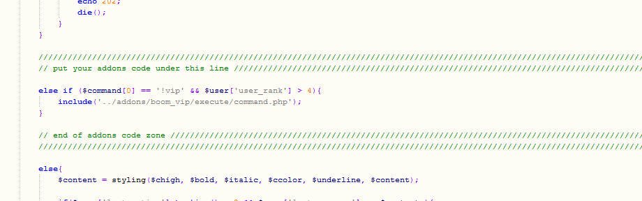

Boom search installation guide
Welcome to Boomchat 6.0 update in this document i will show you all steps to update Boomchat 5.1.1 to 6.0 please follow these steps carefully. These step must be done in order to complete the update with success. please also before attempting any update you should do a complete backup of your current boomchat to prevent any data loss. While updating your chat also i recommend to set your chat to maintenance mode.
Step 1 - Replace / upload updater folder
Inside the step 1 folder you will see a folder named updater please upload / replace that folder in your current Boomchat root this step is really important it will help us to update your database.
Once the upload / replace done go in your chat with your superadmin account and type /update wait few second and you should receive a update success confirmation message.
Step 2 - Replacing files
After the update of the database is complete now we will need to replace all files included in step 2 folder to your current Boomchat installation. once these files are replaced please.After all file replacement it is time to refresh your browser while you are in your chat please do Ctrl + f5 this will actualise your files and load new javascript files.
Step 3 - Updating emoticon
In the step 3 you have new Boomchat emoticons to update old Boomchat emoticon for new ones simply remove the emoticon folder from your actual Boomchat and replace it with the Emoticon folder included in step 4 folder Please take note that Boomchat 6.0 support now both png and gif format for emoticon and you cannot have 2 files with same name ex: happy.gif and happy.png this will cause a mistake in the display of emoticon on chat..
Step 4 - Updating your themes ( optional )
If you have created your own theme you will need to add the file icon.css located in the step 4 folder to all your custom themes that will allow you to edit the colors of new icons set.
Finally ( optional )
If you have buy and installed Boom vip or even if you have installed Boom quiz addons you will need to put back their command code to chat_process.php you remember in first step i tolded you that we will need the backup then here is where we need it. Open your backup chat_process.php then if you remember when you installed these addons you had to include some code in it then we will do the same process now by putting back these code to your new chat_process.php file. Copy the content that you have inside the zone that you see in the image bellow to the same zone in your new chat_process.php file

Congratulation you have updated your chat with success enjoy
Problem after updating ?
if you still have problem with this update do not hesitate to contact me via my live demo or my Code Canyon profile i will be glad to help you with it